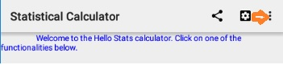

Hello Stats App, Help Version 3.1
This section describes, how to reach to important functionalities present within the App and how to use them. Certain features, which are obvious to understand by simply looking at the UI are not described here.
Application Settings:
The following screen illustrations from the App, show how application settings are specified.

The following screen appears and allows the user to input an email address, when the "Email address" application settings is clicked.
Previous Results:
The following screen illustrations from the App, show how the user can work with the previously stored results.

If there are no previous results available in the App, both the "Clear Previous" and the "send email icon" are disabled as shown in the picture above.
When at least one previous result is available in the App, the user would see a screen something like below.
When the user clicks on any calculation in the previous results list, the calculation's full details are displayed to the user as shown in the picture below.
For these statistical calculations, two modes (i.e how the user can provide data input to the application) of data input are provided to user as shown in the picture below from the app.
a) The 1st option can be used to input data from the Android device keyboard. It is suitable when, the number of values to which statistical calculations need to be done are less.
b) The 2nd option allows the user to input data using a text file (in an encoding like utf-8 or ascii) from the Android device file system. At present, the files stored on external SD cards are not supported, and the file needs to be kept on the Android device's native file system. On some Android devices, the files kept on an SD card may be usable by this feature, but this has not been tested and is unsupported. The data in text file for this purpose, needs to have numeric values mentioned as comma-separated in a simple linear fashion. An example of this kind of data input in the file would be: 2,3.5,82,100,50. This option is provided to allow the users, to conveniently provide relatively large amounts of data to the app, that is otherwise difficult to do so from an Android device keyboard. The text files used by this app, for example may be created in a text edior for Android devices. They may also be created on conventional devices like laptops or desktops, and then copied to Android devices.
Similarly, for the Coefficient of Correlation calculations input data can be provided from the Android device keyboard or via a file. The following picture from the app illustrates this.
The text file for this purpose, need to be formatted as (a1,b1)(a2,b2)(a3,b3)...(). Where, a1, b1 etc are numeric values. In this example, a1 & b1 are values of two variables specified for one entity, a2 & b2 are values for the same two variables for another entity and so on. Arbitrary whitespace characters are accepted in the file, other than where numbers are specified.
Note about the reading from files:
The input information can be multi-line in the file (which can be convenient for large set of numbers), along with a simple case for the input to be on one line.
Arbitrary whitespace characters (i.e " ", \n, \r, \t) are optionally accepted in the input file (e.g between comma and a digit, before the first visible character in the file, after the last visible character in the file, between '(' and a number etc), which will be discarded before the App does calculations on the input.
Sending Email:
The user can ask the App to send an email to a specified address (specified in Application settings), containing the list of calculations stored within the App. The following screen shows, how to request the App to send this email.
The App will automatically compose an email, prepare an attachment with the details and sends the email to the user.